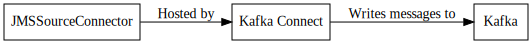

JMS Source Connector¶
The JMS Source Connector is used to read data from a message queue and write it to a Kafka topic.
Important
This connector uses JNDI to create an instance of the JMS ConnectionFactory for your messaging system. Because of this you must ensure that the relevant client jars for your messaging system are in the classpath along side this connector.
Configuration¶
| Name | Type | Importance | Default Value | Validator | Documentation |
|---|---|---|---|---|---|
| destination.name | String | High | The name of the JMS destination to read from. | ||
| java.naming.factory.initial | String | High | The initial context for the JMS Provider See [Context.INITIAL_CONTEXT_FACTORY](https://docs.oracle.com/javase/7/docs/api/javax/naming/Context.html#INITIAL_CONTEXT_FACTORY) for more details. | ||
| java.naming.provider.url | String | High | The url to connect to. | ||
| topic | String | High | The topic to write the incoming data to. | ||
| connection.factory.name | String | High | ConnectionFactory | The name that is passed to the [Context.lookup](https://docs.oracle.com/javase/7/docs/api/javax/naming/Context.html#lookup(java.lang.String)) of the InitialContext specified in java.naming.factory.initial. This should return the [ConnectionFactory](http://docs.oracle.com/javaee/6/api/javax/jms/ConnectionFactory.html) for the JMS provider. | |
| destination.type | String | High | queue | [queue, topic] | The type of destination. queue and topic are supported. |
| java.naming.security.credentials | Password | High | [hidden] | The security credentials to connect with. This is typically a password. See [Context.SECURITY_CREDENTIALS](https://docs.oracle.com/javase/7/docs/api/javax/naming/Context.html#SECURITY_CREDENTIALS) for more details. The documentation for your JMS provider will be helpful as well. | |
| java.naming.security.principal | String | High | The security principal to connect with. This is typically a username. See [Context.SECURITY_PRINCIPAL](https://docs.oracle.com/javase/7/docs/api/javax/naming/Context.html#SECURITY_PRINCIPAL) for more details. The documentation for your JMS provider will be helpful as well. | ||
| message.selector | String | High | The [message selector](http://docs.oracle.com/javaee/6/api/javax/jms/Session.html#createConsumer(javax.jms.Destination, java.lang.String, boolean))that should be applied to messages in the destination. | ||
| session.acknowledge.mode | String | Medium | CLIENT_ACKNOWLEDGE | [CLIENT_ACKNOWLEDGE, AUTO_ACKNOWLEDGE, DUPS_OK_ACKNOWLEDGE] | The acknowledgement mode for the JMS Session. See [Session.AUTO_ACKNOWLEDGE](http://docs.oracle.com/javaee/6/api/javax/jms/Session.html#AUTO_ACKNOWLEDGE), [Session.CLIENT_ACKNOWLEDGE](http://docs.oracle.com/javaee/6/api/javax/jms/Session.html#CLIENT_ACKNOWLEDGE), and [Session.DUPS_OK_ACKNOWLEDGE](http://docs.oracle.com/javaee/6/api/javax/jms/Session.html#DUPS_OK_ACKNOWLEDGE) |
| session.transacted | Boolean | Low | true | Flag to determine if the session is transacted. See [Connection.createSession(boolean, int)](http://docs.oracle.com/javaee/6/api/javax/jms/Connection.html#createSession(boolean, int))for more details. |
Property based example¶
This configuration is used typically along with standalone mode.
name=connector1
tasks.max=1
connector.class=com.github.jcustenborder.kafka.connect.jms.JMSSourceConnector
# The following values must be configured.
destination.name=
java.naming.factory.initial=
java.naming.provider.url=
topic=
Rest based example¶
This configuration is used typically along with distributed mode. Write the following json to connector.json, configure all of the required values, and use the command below to post the configuration to one the distributed connect worker(s).
{
"name": "connector1",
"config": {
"connector.class": "com.github.jcustenborder.kafka.connect.jms.JMSSourceConnector",
"destination.name":"",
"java.naming.factory.initial":"",
"java.naming.provider.url":"",
"topic":"",
}
}
Use curl to post the configuration to one of the Kafka Connect Workers. Change http://localhost:8083/ the the endpoint of one of your Kafka Connect worker(s).
curl -s -X POST -H 'Content-Type: application/json' --data @connector.json http://localhost:8083/connectors